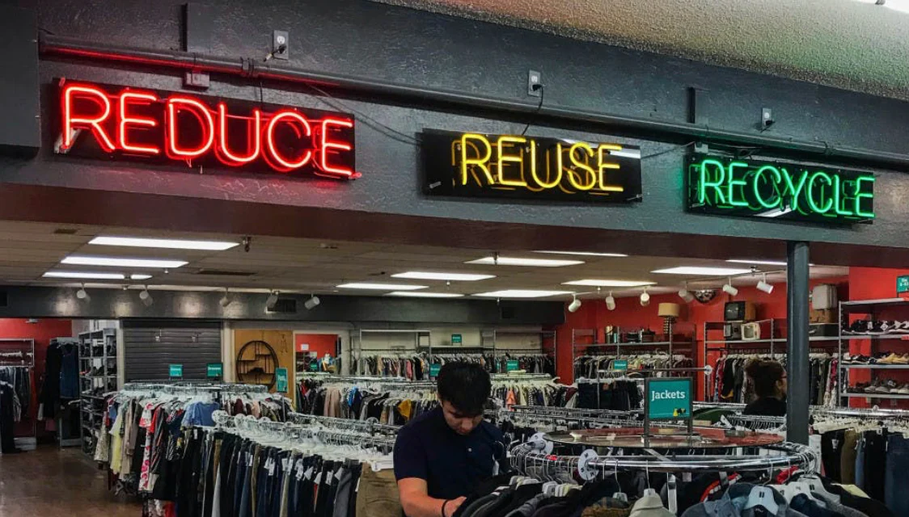
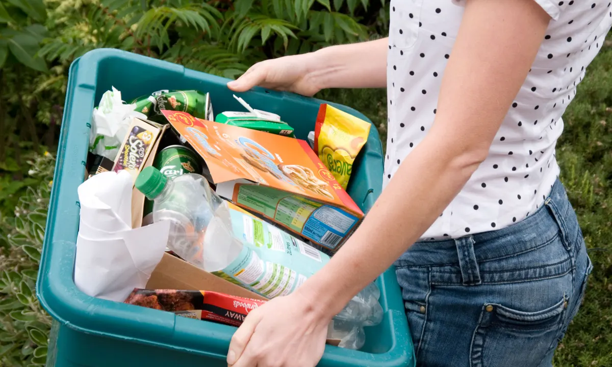
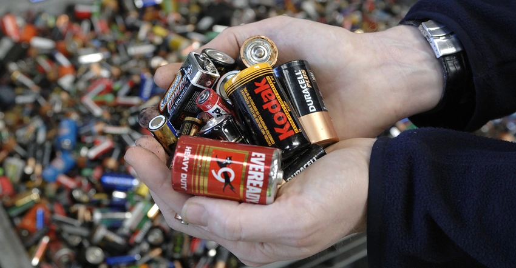

TerraNova
TerraNova
Second Hand
Thrift shopping significantly reduces the carbon emissions and footprint associated with manufacturing and shopping. When you choose second-hand items, you're not only saving resources but also minimizing the greenhouse gas emissions linked to the production and transportation of new products.
What Can't Be Recycled?
We've all probably put something in the recycling bin that cannot be recycled. While you may think you're doing a good thing, you could potentially be hurting the recyling process. This article goes into detail on things that can and cannot be recycled.
How to Recycle Glass
The following article gives step by step instructions and locations on where to recycle glass products in the state of South Carolina.
How to Recycle Batteries
The following articles gives step by step instructions and locations on how to recycle batteries in the state of South Carolina. It shows several different types of batteries and their respective of recycling.